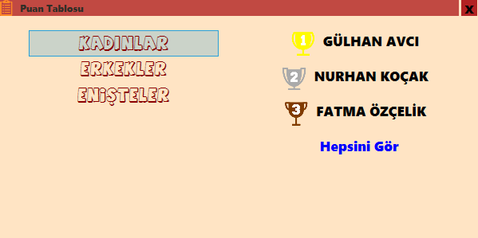
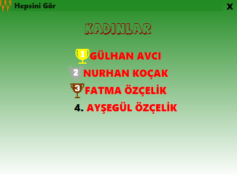
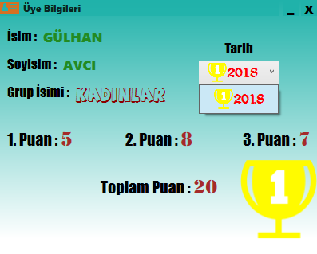

Bu pencere, gruplara kayıtlı olan üyelerin puan listesini gösterir.
1- Bu pencere açıldığında önünüze ilk olarak, kayıtlı olan gruplar gelecektir. Grupların üstüne tıklandığında ise
o gruba ait puan sıralamasında ilk 3 de olanlar gözükecektir. Puan sıralamasındaki diğer kişileri ve gruptaki
herkesin puanını ögrenmek için 'Hepsini Gör'e 2 kere sol tıklanılır.

2- Çıkan pencerede, gruba ait tüm (puanı verilmiş olan) üyeler sıralanmış bir şekilde gözükür.Gerekli bilgileri
almak için üyenin üstüne 2 kere sol tıklanılır.(Aynı anda bir çok sekme açılabilir.)

3- Çıkan pencerede, üyenin kayıt edilen tüm bilgileri gözükmektedir.Tarih sekmesinden üyenin önceki kayıtlarında aldığı
puanı ve sıralamasını öğrenebilirsiniz.
